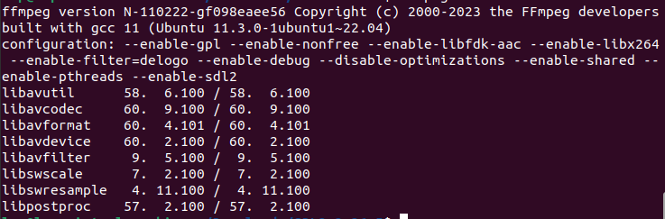

FFMPEG¶
ffmpeg源码编译¶
最终的ffmpeg配置(环境Ubuntu22.04)：  |软件|版本| |:-:|:-:| |ffmpeg|2023-04-10在官网下的| |fdk-aac|2.0.2| |sdl2|2.26.5| |x264|0.164.x|
默认安装路径：/usr/local 参考链接
安装前置依赖项¶
下载编译fdk-aac¶
在sourceforge下载fdk-aac-2.0.2.tar.gz
# 解压
tar -xvf fdk-aac-2.0.2.tar.gz
# 配置
cd fdk-aac-2.0.2 && ./configure
# 编译安装
make && sudo make install
下载编译x264¶
在x264官网下载x264
# 解压
tar -xvf x264-master.tar.bz2
# 配置
cd x264-master && ./configure --disable-opencl --disable-asm --enable-static --enable-shared --enable-pic
# 编译安装
make -j8 && sudo make install
下载编译ffmpeg源码¶
在ffmpeg官网下载Source Code
# 解压
tar -xvf ffmpeg-snapshot.tar.bz2
# 配置
cd ffmpeg && ./configure --enable-gpl --enable-nonfree --enable-libfdk-aac --enable-libx264 --enable-filter=delogo --enable-debug --disable-optimizations --enable-shared --enable-pthreads
# 编译安装
make -j4 && sudo make install
问题一：安装后无ffplay¶
这样编译出来会发现没有ffplay，只有ffmpeg、ffprobe，是因为没有ffplay依赖的sdl，再安装sdl，SDL官网
然后再重新编译安装ffmpeg
问题二：ffplay无法播放¶
报错信息:
安装相关库（咱也不知道为什么是这俩音频库，反正安装了能播就行
然后重新编译安装下SDL2应该就可以了。
问题三：可能ffmpeg命令失效/编写的c++程序报错找不到动态库¶
报错信息:
在~/.bashrc中添加环境变量
export LD_LIBRARY_PATH=/usr/local/lib:$LD_LIBRARY_PATH
# 如果是找不到头文件，添加下面的环境变量
export C_INCLUDE_PATH=xxx/path:$C_INCLUDE_PATH
export CPLUS_INCLUDE_PATH=xxx/path:$CPLUS_INCLUDE_PATH
ffmpeg命令¶
ffplay播放¶
# 播放h264
ffplay *.h264
# 播放aac
ffplay *.aac
# 播放pcm
ffplay -ar 48000 -ac 2 -f s16le -i *.pcm
# 播放yuv
ffplay -f rawvideo -video_size 1280x720 -pixel_format nv12 *.yuv
推流¶
ffmpeg -i ${input_video} -f flv rtmp://${server}/live/${stream_name}
# -i 输入文件路径/url
# -f 强制采用某种格式 rtmp推流一般采用flv流数据
# -vcodec copy -an 只推视频，不推音频
# -re read input at native frame rate, 按照时间戳顺序推流
# -stream_loop -1 无限循环播放
# -flvflags no_duration_filesize 不要抛出duration_filesize警告
ffmpeg -i ${input_video} -c copy -f rtsp rtsp://${server}/stream
加时间戳水印¶
ffmpeg固定码率给MP4增加时间水印：-ac: 音频通道 -ar: 音频采样率
./ffmpeg.exe -i 720HDR30.mp4 -vf "drawtext=fontsize=100:text='%{pts\:hms}':x=25:y=25:fontcolor=red" -b 6991k -c:v libx264 -c:a copy -f mp4 output.mp4 -y
去除视频中的B帧¶
在不支持B帧的解码器中，如果传入了B帧会导致解码播放的视频卡顿
# -bf 0方式
ffmpeg -i *.mp4 -vcodec libx264 -bf 0 out.h264
# -x264opts "bframe=0"fangs
ffmpeg -i *.mp4 -vcodec libx264 -x264opts "bframes=0" out.h264
# -profile:v baseline方式
ffmpeg -i *.mp4 -vcodec libx264 -profile:v baseline -pix_fmt yuv420p -s 1280x720 -acodec aac -r 30 -g 30 out.mp4
查看视频中是否含有B帧¶
设定gop值¶
-g参数指定gop帧数，修改gop时要重新编码即需要指定 -c:v libx264等字眼
ffmpeg -i sample.mkv -c:v libx264 -b:v 2048k -s 1920x1080 -r 30 -g 250 -c:a libfdk_aac -b:a 128k -ac 2 -ar 44100 out.mp4
修改分辨率¶
-vf scale=x:y